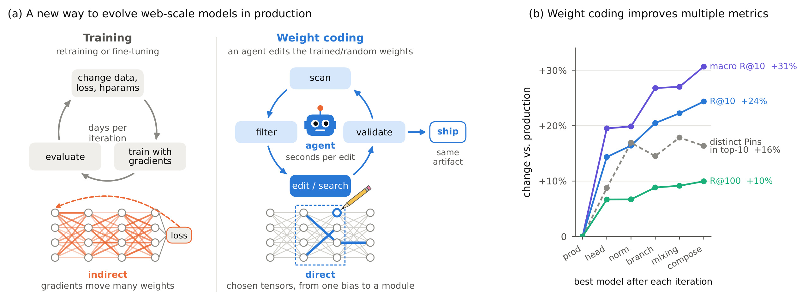
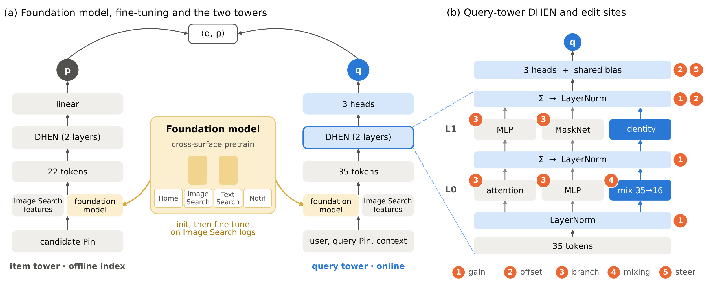
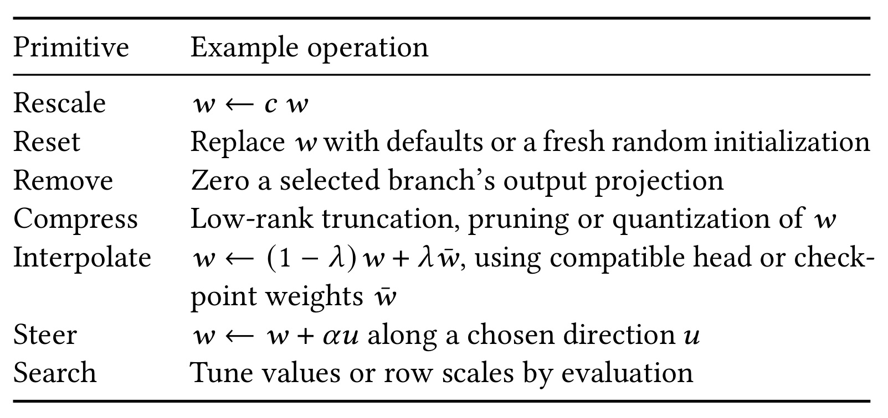
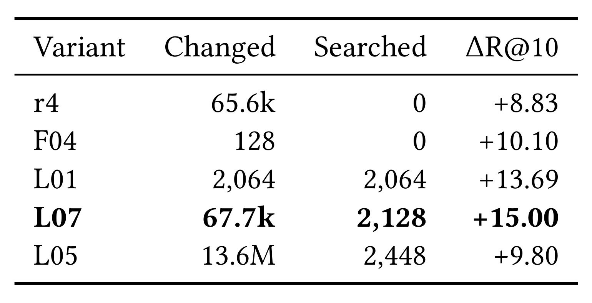
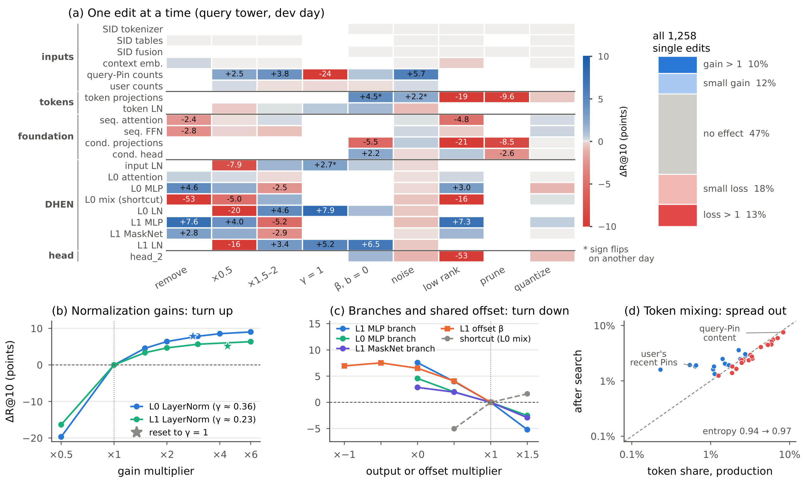
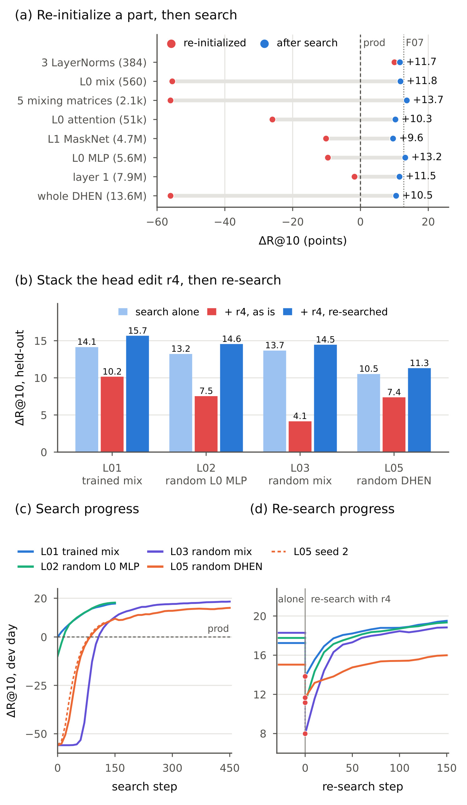
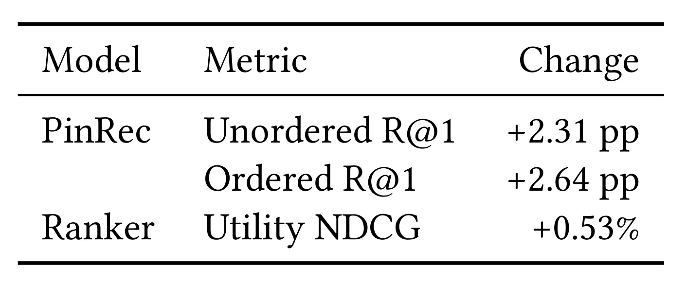
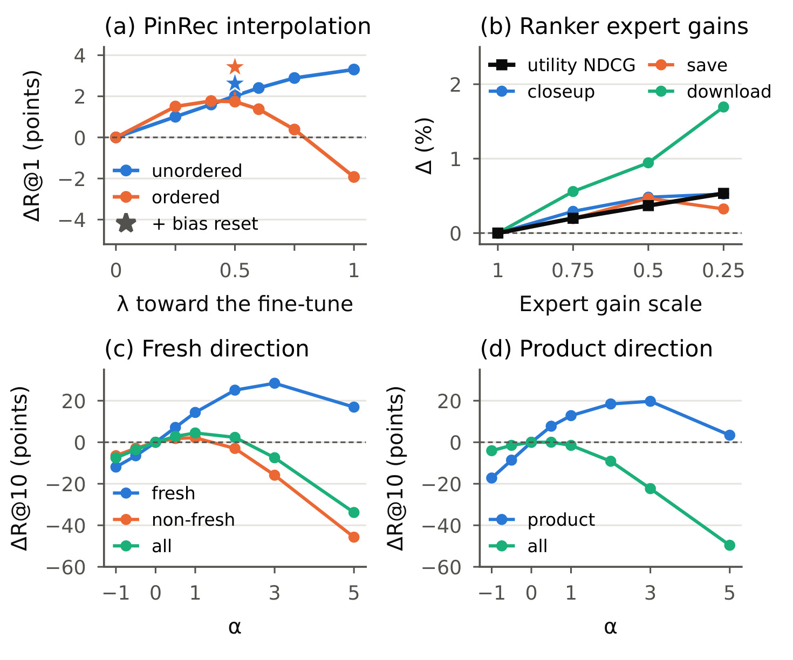
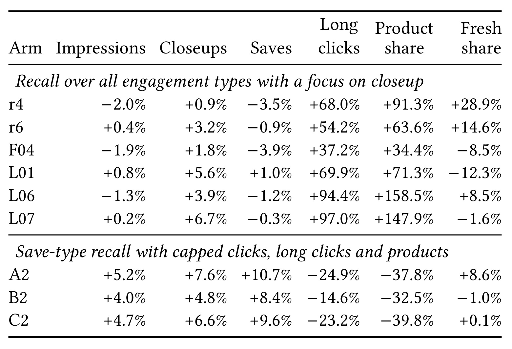

Weight Coding：通过大模型代理直接编辑推荐模型权重
Junpeng Hou、Jiaxing Qu、Derek Cheng、Jaewon Yang、Abhinav Naikawadi 和 Karthik Subbian 均来自 Pinterest。论文以图搜双塔为主案例，研究在固定模型结构、输入特征和服务逻辑时，用大模型代理写出可执行权重编辑，再通过缓存评估筛选候选。arXiv v1 提交于北京时间 2026 年 11 月 23 日，列于 arXiv 11 月 24 日公告，本轮未核验到独立源码。 arXiv:2611.29613
大规模推荐模型需要随用户兴趣、内容库和业务目标变化持续调整。常见迭代先改数据、损失或结构，再重训或微调。作者追问，能否直接写出和验证针对权重的改动，利用任务反馈让已有模型按所需方向演化。
1. 背景和问题
1.1 图搜双塔的优化入口
Pinterest 图搜面对的是给定查询图钉、用户和场景，从物料池找回相关图钉。用户打开图片详情、进一步长点击、收藏和后续行为各有价值，而且出现率相差很大。检索阶段最先决定精排能看到什么。相关图钉如果在候选集中漏掉，后面即使有更好的用户状态或商业效用模型也无法补回。反过来，双塔自身的召回增加也可能只是改变多路候选的占位，后续竞争、重排和展示共同决定全站消费。论文同时观察离线召回、来源人均行为、分群曝光等口径，几组证据各回答不同层次的问题。作者关心的是在架构与服务接口固定时能否把现有权重的行为改到适合目标的区域，首先用早期漏斗的可解释编辑检验这一点。
现有训练链路有两段。跨场景基础模型用主页、图片搜索、文本搜索和通知等不同入口信号，提供融合语义与行为的共享编码起点。图搜另外用该场景日志做表面层后训练，以用户、查询图钉、候选图钉和计数等特征适配目标。查询塔在线算向量，物料塔的向量用于离线索引。两层深层分层集成网络 DHEN 负责 token 交互，其中既有注意力、前馈子网和 MaskNet，也有跨 token 的快捷混合。这类结构使训练能够组合大量信号，检查点本身却很难说明某类信号在最终检索里的份额。例如，同一个向量分数可来自内容 token 增强、用户历史抬升、共享偏置平移或者分支输出相对强度变化。当参与训练的参数一起更新时，很难从一次最终指标变化逆推出哪个部件承担了它。
论文把修改点放到已训练参数。图搜后训练使用约三亿二千万交互日志，以批内采样 softmax、跨设备收集负样本与 logQ 修正优化。矩阵采用 Muon 类优化器，归一化增益、偏置一类一维参数以及可学习温度涉及另一种优化口径，文中注明一维组采用带解耦权重衰减的 Adam。训练损失在整个检查点上一同优化，但部署前关心的是固定语料中有业务意义的候选排序。有用的交互分支如果与残差主路或共享偏置失衡，梯度学习得到的组合可能仍留有调整空间。作者观察到训练结束时两层归一化的增益偏低，把特定增益重设回默认值就能显著改变留存候选。这个观察指向可调的函数行为，单凭相关性无法把所有空间归因于某一组优化器或某个超参数。
1.2 从张量改动到产品目标
在检索工程里，改训练数据、增加特征、改损失和重选架构各影响训练与上线依赖，常常需要整轮验证。论文保留原有模型结构和服务逻辑，编辑可以像一系列小变更一样记录，既可以检验一个归一化向量，也可以记下一次分支投影置零或混合矩阵重搜。一个实际问题是找到可理解且足以改变打分的参数断点，使每次评估集中在后续计算。比如只修改一个头的共享偏置，可以利用固定物料向量分析哪些方向被推高。修改查询侧 token 混合时，可问近期交互、查询图钉内容与上下文这几类已有表示在进入后层时的相对权重是否被过度压缩。通过这样的选择，结构和已有权重都成为搜索先验。
这种入口也能表达训练任务之外的运营偏好。召回头原本预测若干类参与行为，编辑可以把查询偏置往近期图钉或商品图钉的物料向量均值方向移动。不同于在可见曝光之后重排序，偏置会先改变进入候选池的图钉。它也可能集中命中热门物料、缩小其他内容的排序余量，或者只调整来源间分配。论文因此不只观察一个总 Recall，还检查各行为、新鲜和非新鲜图钉、商品分群、头部热门份额和前十不同图钉数。读这些变化时要处理交集：总召回提升可能主要来自占比高的打开详情样本，商品分群高度增益可能由于基数小。离线知道目标被推高后，还要确认牺牲的是什么以及线上是否沿同一方向变化。
直接编辑和零阶搜索各提供一部分能力。重设增益使用默认值这个先验，甚至没有优化自由度，但会修改一批实际参数。连续搜索则可以在已知重要的几个位置探索实数参数，成本由维度、扰动数量、每次评分以及需要搜索的迭代数共同决定。本文的代理负责根据结构提出参数位置、实现操作、读回评估结果并修改假设。生产工程师确定业务目标、审批候选和上线。实际改写的是推荐器权重，代理参与的是离线开发过程。把两者分清后，才能理解为什么线上仍可维持原服务逻辑，同时离线仍需运行大量前向评估和执行脚本。
1.3 证据如何跨出同一评估日
缓存前向能缩短单次测量，也使开发日上可试配置增多，增加了把评估细节当成真实改进的机会。例如，在一个只数严格更高分对手的评估器里，许多向量相同可能产生大量并列，让名次看起来更靠前。这样获得的召回与用户愿不愿意点查不在同一条因果链。作者将找到候选、淘汰反转编辑、确认上线前证据分离到不同日期，并要求把候选导出后交给生产评估器重跑。还用不同语料、不同召回截断和分群指标检查编辑能否跨出自身搜索口径。每天可能共享采样偏差，因此日期变化和语料变化是两个检验维度。评估器的分数比较也需独立检查。
作者进一步区分已有权重的局部修正与随机模块重建。前者测试在直接接触少量张量时能否改善一个上线基线，后者则问完整随机化某个交互模块后，保留训练好的外层编码、输出头和索引，能否仅搜索少量混合和归一化坐标就恢复功能。这个设定把大规模表示学习先验放在段外，也暴露组合问题：单独收益好的头部编辑和混合编辑可能都利用同一偏置或通道，直接相加会重复修正。跨 PinRec、精排以及图搜来源 A/B 的证据在其后展开，分别测试这种研发方法能否迁移、编辑是否对应预定目标，以及目标源增量对全漏斗解释的边界。
2. 方法
2.1 权重编辑及其评价目标
令现有推荐模型为给定的网络和检查点，改动是从现有参数出发的可执行变换。当前层级的实验固定输入与服务结构。研究者可以记录哪个模块、哪份张量、哪个启动检查点和哪些数值发生了变化。把日级同口径差值作为候选编辑的主要外部判定。
符号解释：原权重为 θ，改后权重为带撇号的 θ，编辑映射为 e，实际发生变化的条目集合是支持集 S，i 是分量索引。日期 t 的评估指标记为 M，Δ 是同日同口径绝对差。搜索自由度另外计数。例如把六十四维增益统一置一可能改变六十四个值，执行这一固定规则时无需调六十四个数。作者希望在未参与编辑选择的日期 Δ 为正，因此每个编辑的正负号都依赖清楚的日期和基线。召回以百分点报告时，使用绝对 Recall 差；若用同基线分母做相对数，还要写清分母。

Figure 1 左侧在同一示意里展示两类路径。常规训练先调整数据、损失或超参数，再通过反向传播间接改变一组权重，评估后重新迭代。编辑从模型产物入手，环上的扫描寻找位置，筛选去掉不稳定手法，编辑或搜索实现新的候选，验证接到交付判断。这里的检查点可在原有计算图中载入，离线流程针对的最小操作单元可以只有一条偏置。图里的秒级标注指单次编辑，作者另外计了找到若干候选的一整轮和达到最佳模型的四轮，不能用秒直接替代它们。
右侧的横轴是生产起点后头部、归一化、分支、混合、组合等阶段，每点表示当阶段选出的代表产物，纵轴是相对生产改变量。最终宏平均 Recall@10 增约百分之三十一，主要 Recall@10 增约百分之二十四，前十不同图钉数增约百分之十六，Recall@100 增约百分之十。看曲线时应分开四个指标的分母：不同图钉数考察多样性，召回曲线考察相关目标是否出现，宏平均和文中主口径也不同。虚线的中途回落说明从阶段代表点不能推断每个编辑给每种指标的边际贡献。独立留出和 Table 2 的百分点值才适合具体比较结果。图也说明验证与发布之间仍有人类决策节点，线上没有把该代理接入候选打分。图左最下方的红、蓝线还给出可审计范围的差别。常规训练往往跨许多权重传播梯度，蓝色编辑只授权写入指定张量。它的验证责任因此集中在所选参数与下游依赖，仅读两个原始候选分数仍不足以判断周边表示有没有被意外改动。
2.2 双塔编辑位置与操作原语
图搜以归一化表示让一对查询和物料产生余弦排序分数。查询侧的特征含查询图钉、用户和上下文，物料侧将候选置于同一表示空间。后续编辑发生在向量产生之前，所以同一物料可因查询侧改变而进出前 K。作者定位的是 LayerNorm 增益与偏移、分支输出、混合以及头部偏置。物料塔与索引如果保持原样，所有候选都以原物料向量接受新的查询方向打分。
符号解释：x 为带用户和上下文的查询，y 为候选图钉，q 和 p 分别是查询和物料映射，尖括号为内积，θ 表示模型参数。返回头向量经过二范数归一化时该分数等于余弦。通过共享偏置转移一群请求的向量，归一化会让具体影响随原查询方向而变，因此概念引导需按实际人群重测；如果两塔都动，图中的同一向量空间还要求对上更新后的离线产物与在线查询版本。

Figure 2 左面板底部先标出向量来源。左边物料图钉进入物料塔，图上是二十二个 token 和双层交互，上方线性映射生成物料向量。右边查询侧用三十五个 token，由用户、查询图钉和上下文出发，最后有三个头。两路在顶部靠内积合并；中部用黄色连接的基础模型表示两塔继承同一跨场景训练背景，并在图搜日志上再做微调。这个图将上线索引和在线请求分开，所以同尺寸的新模型并不自动继承所有旧向量的语义。如果实际编辑落在物料侧，复验必须特别检查向量生成和索引版本。
右面板从下往上读：输入层归一化后，第一层把注意力、前馈和三十五到十六的混合快捷路线相加，接归一化。第二层相加的输入是前馈、MaskNet 和恒等捷径，再进入归一化。最上边的三个头及共享偏置对应输出。图底部的五个橙标依次指增益、偏移、分支、混合、引导，因此橙标出现在不同层时表示同一种可执行操作可作用在多个位置。减少分支强度会改变它与捷径在求和时的相对贡献，重设归一化偏移会改变输入到后层头部的通用方向，混合矩阵则能改哪些 token 之间相互传递信息。实验中的 F04、L01、r4 分别沿这些位置展开。
在明确位置后，原语指定直接写入的规则。重设可以回到初始化默认值或重新采样，移除通过将某分支输出投影设为零实现，压缩用低秩截断、剪枝或量化。缩放、插值和沿指定方向引导可用三个简单表达表示。
符号解释：w 是当前所选张量，c 为缩放量，λ 控制向兼容张量平均，带横线的 w 是另一训练头或检查点的对齐张量。α 调节偏置平移幅度，u 是方向。对某属性 F，两个 μ 分别为该属性和补集的物料平均嵌入，范数使差向量变成单位方向。差向量几乎为零时，单位化会放大抽样噪声，此为公式直接带出的工程边界。引导以后仍经过现有打分路径，调节的是候选分布。

Table 1 第一列区分操作类型，第二列给张量怎么更新。需要看清其中移除表示输出投影清零，执行时仍沿用同一网络拓扑，也无从只据此宣称服务延迟下降。压缩列列举低秩、剪枝和量化作为可能的编辑，它们和线上物理 kernel 是否减少计算是另一个指标。重设中的随机重置会写入整块张量，搜索列才说明对其中多少值或行缩放作连续优化。两列还帮助读后来实验的 Changed 与 Searched，前者可包含初始化和固定插值，后者只计连续搜索的自由度。插值要求头部或快照相容。即使物理维度相同，跨版本参数语义也可能不同，论文的 PinRec 例子使用相关图搜广告微调快照，并在系数上扫描。表中的搜索本身也可以作为循环的入口：校验后发现改一整层方向对但数值不稳，可缩小到特定行、只搜缩放倍数，或者用同层重置再测区别。压缩操作如果改变实际数值，仍要通过与重设相同的留出与并列检验。
2.3 缓存前向评价与无梯度搜索
缓存前向把生产基线在固定评估数据上的表示和必要中间状态预先算好。候选编辑直接改载入 GPU 内存的 TorchScript 参数。受影响的模块及下游重新运行，未受影响且输入相同的路径复用缓存。这个机制决定评估速度，也定义正确性条件：一旦编辑切到缓存边界上游，旧中间量不能再复用。评估引擎在首轮扫描前和生产评估器比对，候选导出后再次整体打分。Agent 在受约束的 shell 内接触代码、制品、查询与训练工具，从一次扫描的结构位置和离线反馈逐步改写假设。工程师设目标并决定上线，原有线上召回路径按被选的权重运行。
选定连续编辑位置后，作者可以直接搜所选值，或在每一行的对数尺度上搜索乘性缩放。以直接权值为例，每对扰动共用同一高斯向量、两个符号分别评价，原文过程可写成：
符号解释：w 是当前候选张量，两个上标区分一对向相反方向尝试的张量，ε 是第 i 个高斯方向，均方根控制扰动与张量整体尺度匹配，σ 在直接值搜索用零点零五，行对数缩放用零点一。每步共三十二个候选分数，将它们转成中心化排名后用 Adam 更新，学习率零点零三到零点零五；Adam 操作的是按评价统计构造的搜索更新。开发日正例随机分半，一半作搜索反馈，另一半每十步检查一次，保留其上最好的步。候选模型前向无需反传，Adam 也没有消除打分和检索本身的计算，解释 GPU 成本时需把缓存构建、并行度、模型下游重算和搜索步数一起记账。
2.4 日期划分、并列校验与产物交付
作者的扫描、编辑设计和连续搜索使用开发日，过滤日只用于淘汰开发日效果发生符号反转的单编辑。留出日做完整评估和线上候选判断，文章明确这部分不会反哺编辑迭代。如果同名语料跨日期共享偏差，只切日期仍可能出现某些类型的偏高结果，所以还要在与搜索目标不同的行为、物料群体和库上重测。日级拆分和开发日内部搜索、检查两半样本分别解决跨日稳定性与最优步选择。检索相等的分数是否当作排在正例前面也要单独核验，对应两个名次约定：
符号解释：s 是检索分数，正号下标表示正例，j 遍历其他候选，指示函数括号内成立取一。前式遇同分不加一，后式把同分对手排在正例之前。诊断编辑使物料向量趋同后，原口径 Recall@10 从零点六二六提高到零点六三九，作者为识别这类伪增量也看悲观名次。正式候选要用生产评估器对导出制品给分，同时逐张量对照原生产模型。这样一份少量编辑必须同时经快速引擎和正式评估，也必须能说明序列化后哪个模块实际改过。
3. 实验结果
3.1 数据、候选与成本分母
主案例是 Pinterest 的一亿四千七百万参数图搜双塔。离线生产评估基于排序流量与随机流量的每日交互日志，在固定语料内按行为类型得到正例 Recall@K，再按行为权重取微平均。表中的差值以同一日、同一评估集和配置的上线模型为对照。正文没有提供所有行为权重、每个日期和库里完整绝对基数，无法从百分比重建某个特定行为的总体收益。Table 2 是代表性生产评估指标，Figure 4 的数值有开发日搜索轨迹和四个留出日柱图，两个视图分别使用原作者写明的口径，不把它们混作同一张对照表。
作者说跨场景基础训练超过两百 GPU 小时，表面层完整微调在八张 A100 上约一百四十 GPU 小时。一次完整的编辑寻找循环平均八点六 GPU 小时，四轮得到本文最佳模型，合计约三十四点四 GPU 小时，是该次表面层微调的百分之二十四点六。端到端单轮在找到一批候选前不到两小时，和表中 GPU 时间是不同维度。论文没有列出 LLM 代理调用的独立费用、工程审批及其他平台计算账单。将四轮总 GPU 小时理解为图搜案例相对某个训练基线的运行量比较，可保留这个算式的意义，同时避免把它泛化到所有排序器和训练管道。
3.2 已训练权重与随机重建
先把代表性单编辑、连续搜索和组合放在一组表中。看收益前要分开 Changed 和 Searched 两列，基础模型规模和行内写入量都不等于可学习自由度。

Table 2 的第一行 r4 重写约六万五千六百值，连续搜索列为零，Recall@10 加八点八三个百分点。这组改动背后仍有四个原语设置：令检索头共享偏置远离非新鲜图钉均值、朝新鲜方向移动，再加入一个常量偏移，并以百分之二十权重混另一个训练头。零搜索说明它未进入该表口径下的连续优化，仍经过选择和评估，不能理解成随机指定会复现。F04 只改一百二十八值，通过重设第一层增益和第二层偏移达到加十点一零个百分点。L01 启动于已训练混合矩阵，连续调整并实际修改两千零六十四个参数，加十三点六九个百分点。L07 将已有头编辑与混合放到同一次重搜，共改约六万七千七百值，其中只搜索两千一百二十八值，生产评估增加十五点零零个百分点。论文摘要将这一行对基线的变化写为约百分之二十四相对改善。L05 将一千三百六十万参数的交互块重置，在此基础上只搜两千四百四十八值，生产评估加九点八零个百分点。它保留编码器、输出头、物料塔等训练所得组件。
解读表中数字时还应考虑横向选择：单次重置的收益不能按改单参数数量做线性外推。少量共用增益可以一起影响每条查询，幅度大恰说明这些参数在结构中作用范围广。相反，随机重置增加了大量 Changed 条目但选值空间仍小。表只挑了表现有代表性的候选，无法用五行估算通常成功概率。该概率需要看下面的扫描分布以及开发曲线反转。生产评估是原作者线下评价器，线上另表报告。十五个百分点是绝对差，论文中的百分之二十四是相对基线改善。

Figure 3a 从上到下标出输入、token、基础模型、交互块和预测头，横向依次是移除、缩放、置一或置零、加噪、低秩、剪枝和量化等候选。热图单位是开发日 Recall@10 百分点，颜色和单格数字将位置与操作成对呈现。星号表示换一天再测方向反转。右侧的饼形分布汇总两塔共一千二百五十八次单编辑，而热图是查询塔；绝对差不到零点一个点的约占百分之四十七，增过一个点的约占百分之十。论文在开发日改动绝对值超过一个点且完成复测的编辑中看到约百分之二十三反转，此比例不能乘到所有扫描配置上。大量低效、退化和反转的记录同时解释为何要做过滤日以及为何最终五行代表模型不等于随机选一个位置的期望收益。
Figure 3b 横轴是两层增益的相对放大倍数，纵轴仍为召回百分点，两层乘零点五都有明显退化，向上调节多为正。零点三六和零点二三是所示两层训练后的近似增益水平，图上的星号对应置一。Figure 3c 读的是分支、偏移和快捷路的乘数，曲线在生产乘一处交回零。减弱若干分支或偏移能提升，而完全移除第一层混合捷径会退化；因此实验又单独尝试拿掉四个交互分支、保留捷径和归一化，留出日都有正增益，平均约六点一百分点。Figure 3d 对照生产和搜索后的 token 权重份额，使用的是第一层快捷路绝对权重在全部权重上的归一份额，熵从零点九四到零点九七。搜索后主要表现为份额重排，五矩阵的相对变动范数高达百分之三十九至六十四，但张量均方根只改变约负百分之六至正百分之十六。该证据支持在此设置中重配已学信号，不足以证明散度或熵本身可以当作其他召回器的通用目标。
3.3 模块重建与编辑组合
作者用默认 PyTorch 初始化随机重置交互块或其局部结构，保留训练中的周边模块。随机化后只搜行尺度的整个 DHEN 版本比生产低十点，说明能否跨 token 混合会影响搜索结果。成功随机混合与训练原矩阵的相关为零点一三至零点四六，但它们对 token 份额变化与训练起点所得变化的相关达零点七六。表明不同系数具体值能实现某些近似的 token 份额重分配，并不等于背后路径完全等价。

Figure 4a 把复位后的开发日红点和搜索后留出日的蓝点放在相邻横坐标，每一行对应重置部位，纵向最后一行是整个 DHEN。颜色隐含数据口径切换，因此蓝红的距离同时包含优化效果和评估日差异。看绝对基线时应使用零线和同样评估的同类曲线。完整随机 DHEN 的留出日均值仍有十点五百分点，独立生产评估为九点八。Figure 4b 的三色柱是在同组基础上比较单独搜索、直接加 r4 和带 r4 重搜。L01 独立的四日均值为十四点一，叠上 r4 降到十点二，联合重搜后到十五点七。L02、L03 与 L05 也有直接叠加退化再回升。对此作者解释独立编辑可能动到共享偏移或快捷路的共同贡献，重搜让混合与头部相配。L07 表中十五点是生产评估，四日最低一天仍提高十三点八。
Figure 4c 横坐标是搜索步，纵坐标为开发日召回差。随机混合和完整随机 DHEN 一开始贴近零召回对应的位置，经过若干平台后跃过生产基线，作者写约第九十至一百一十步。完整随机 DHEN 有两条种子轨迹类似，不能据此得到所有种子方差，图也没有展示从随机态学习新编码器的实验。Figure 4d 横轴从叠上头编辑之后重新计步，初始值差，然而较早恢复，提示把已知有效编辑重新置于同一目标和数据上调节能消解部分互相抵消。根据图而得的生产建议是保存编辑顺序和相邻状态，并给待组合候选重新评估，因为相邻轮次通常共享同一输出，独立结果好的两份制品之间依然可能存在强相互作用。只看随机重建的最终蓝点会隐去起步成本，还需对照开发日停滞区间。
3.4 生成召回、排序和分群引导
其他漏斗阶段沿用同一日期划分和编辑步骤，但采用各自评价器。PinRec 有一亿零六百万参数，自回归 Transformer 配共享图钉嵌入。无序 Recall@K 把目标被任一查询头找回就记上，有序指标还要求对应自回归位置匹配。精排是一十三点七亿参数的八专家、十五行为头结构，另有直接路径、校准与固定效用融合。它在重新对比融合前对各头用开发日重拟合校准。作者看到仅校准就可让稀有标签的分桶 AUC 估计绝对高约零点一一，即使排序没变，所以进一步选择精确的请求内 AUC 和记效用增益的 NDCG。

Table 3 采用三个不同口径。PinRec 半程权重插值叠加头部隐藏层偏置重置，对无序 Recall@1 加二点三一个百分点，有序加二点六四个百分点。由于纳入位置约束后命中集合变动，两个提升不能相加，观察它们在同一个实验配置均变正才是表的证据。作者还测试了对 PinRec 图钉嵌入 LayerNorm 增益重置，在开发日的无序 Recall@10 下降八点八个百分点。这是图搜 F04 的归一化经验不能直接照搬的实例。精排行的效用 NDCG 提高百分之零点五三，用的是相对量，不能按百分比字段与上一行百分点同台排序。文本另报告将专家增益缩小到一半或四分之一，在每个留出日都正，给出对应 z 值范围七点八至十点五。将专家增益重置为一则使打开详情 AUC 绝对下降零点零二九。表覆盖的是离线已选模型，论文没有在这里给出它们的上线效果或全站绝对收益。重跑时同一组请求的候选集合、分数校准和评估日期都需对齐。

Figure 5a 的横轴从生产快照插到相关图搜广告微调快照，纵轴为两类 R@1 差。无序曲线基本往上走，有序在中间达到较优、靠近终点发生负变化，带星号的点表示加上偏置重置的独立候选。由此可见仅在两个检查点端点判断兼容，或只盯一个无序指标，都可能错过中间解。Figure 5b 横轴是专家增益缩放比例，向右越小。效用 NDCG、打开详情、收藏和下载的相对曲线形状不同，需要带重新拟合校准的口径解释。例如四分之一对下载曲线更强，收藏曲线由半缩放后回落，并非统一最优。
Figure 5c 和 5d 横轴都为方向幅度，纵轴是分群或整体 Recall@10 百分点。新鲜 α 等于一时整体加四点五、新鲜加十四点四，新鲜前十曝光份额从百分之五点二到十三点四。商品 α 等于一时目标分群召回加十二点八、整体减少一点五，商品份额从百分之零点二六到一点零六。曝光比例在测试系数范围单调，召回没有相同规律；α 等于五时新鲜和商品份额分别可达约百分之七十、三十九，但强商品引导下最热门百分之一物料的份额由零点一变成零点四二。幅度因而同时是目标和集中度控制。文中还把商品引导加到 L07，使商品召回的提升从二十八点三提高到三十八点二百分点、整体加十四点一；商品正例较少，论文认为它的召回估计不如曝光稳定。分群方案若需固定一个运行点，应记录同测试库的总体召回、分群正例数、曝光比例及热门集中度，连同曲线边界提交。沿大幅度区间选点时，即使商品在候选中的占比继续提高，相关商品的召回也可能被大量普通近邻稀释。
3.5 两种在线目标与来源归因
图搜双塔候选进入生产流量后，作者给出每组约一千万用户、约一周的 A/B 测量。Table 4 指标事件来自被编辑的该路召回，计数列按用户计、分群曝光占比列以该来源曝光作分母，各单元格均为相对生产变化。表注的新鲜图钉定义为年龄不超过二十八天。正文未给具体的全部组置信区间、全站归因分账和逐日放量步骤。全行为组偏重打开详情，收藏组把离线正例改成该标签，并使用点击、长点击和商品的铰链惩罚，在超过五千万图钉的服务索引中搜索与 L07 相同的两千一百二十八值。

Table 4 的上半部分是全行为目标组。L07 来源曝光人均增加百分之零点二、打开详情人均增加百分之六点七，长点击增加百分之九十七，商品来源曝光份额相对增加百分之一百四十七点九，收藏人均却下降百分之零点三。作者报告这六臂的打开详情每曝光都升，高度跟随其生产离线 Recall@10 的变化，相关系数零点九七。样本是同一业务下六个候选版本，不能把它当跨业务指标校准。看 L01 会发现其收藏加百分之一点零，同时新鲜曝光占比相对下降十二点三；r4 或 L06 又以增加新鲜份额搭配各自不同的点击变化。这些差异和作者所说离线全行为目标偏向高频打开详情一致，也说明整体离线增量不能替代对每个线上动作的检验。
下半部分 A2、B2、C2 来自不同起点和语料权重。A2 的来源人均收藏增加百分之十点七、打开详情增加百分之七点六，长点击却下降百分之二十四点九，商品曝光份额相对降低百分之三十七点八。B2 的收藏增加百分之八点四、长点击下降十四点六，C2 的收藏增加百分之九点六、长点击下降二十三点二。论文另算每曝光收藏增加百分之四点三至五点三，低于人均指标改变量是因为来源曝光也增。上半表的商品升幅和下半表的商品降幅都使用比例的相对变化，缺少基线份额就不能算份额百分点。作者观察到排序器会偏向新召回，从而挤掉其他来源曝光和行为。当前在线表只支持来源归因结果，报告全站净影响还需独立曝光分账和全站指标。文章提及其他预排编辑有全站收益，未随表量化，故不把这部分合进主结论。
3.6 检验口径与未解问题
在不同语料复测中，L07 的 Recall@10 仍增九点七百分点，也在全语料和未用作目标的 Recall@1000 观察到正增。前十不同图钉提升约百分之九至十八，头部百分之一物料占比下降。搜索编辑的开发日到留出日的召回增量平均收缩四点五百分点，仍保留正增。按作者设计，这些结果联合反映同一产品内多维复验通过。假若另一模型的动作比重、候选索引或排名功能差得很大，应该保留这套复验步骤，具体有效操作从签过名的初始制品重新查找。
作者另外做了两个训练诊断：只重设第一层增益的 F02 在最后训练日把头部批内采样 softmax 损失从一点三降到一点零一五；对一维参数去掉权重衰减重新训练，虽然归一化增益接近一，生产评估 Recall@10 反低三点五，而混合矩阵搜索在那份权重上仍添十六点八。这样可以把增益偏小这一诊断现象与其作为唯一因果解释分开。原论文未披露可公开复跑的训练日志、完整代码和用户级置信区间，本笔记的数值均基于论文原文。
4. 总结
4.1 可以迁移的是可定位的实验方式
最可迁移的部分是把大模型辅助开发变为固定基线、可执行改动和分层回放。图搜双塔的约束让每一个候选都能追到已有分支、头或归一化张量，作者也展示直接叠加会退化、联合重搜能恢复。离线显著的代表案例不来自一条复杂的新算子，而来自对已有模型中的信号分配重新找合适的配比。对于已经有长期离线回放与多路行为归因的业务，可以先针对少数看得懂的模块测试那些参数的敏感度，再决定是否需要花预算跑连续搜索。给模型编辑绑定输入检查点、算子版本、目标扇出和导出产物，更像管理一次可复现的训练差分。只有字段和指标结构对得上，线上原接口不发生变化的优势才真正体现出来。
4.2 证据边界与后续核验
- 搜索成本受评估架构制约。 已缓存查询和物料表示、候选编辑很局部时，找到候选的秒级单次编辑更有优势；如果改动触及编码器或索引，缓存范围和重建成本都会改变。论文给出了对比表面层微调的 GPU 小时，代理调用、跨场景预训练和线上改版成本需要单独列账。
- 离线有效位点依赖检查点和指标。 图搜归一化的正例与 PinRec 的下降、精排专家置一的负例同在一篇文章里。同一训练模型的不同快照也未给完整的跨版本适应证据，直接照搬固定系数会把旧版的中间向量几何当成新基线。
- 局部随机重建保留大量训练先验。 交互块外仍有训练过的输入编码器、头和物料塔。恢复相似召回只建立在现成表示上，无法回答所有权重从随机开始是否能在相近迭代数内获得文字、图像、行为语义，或搜索自由度如何随规模改变。
- 来源实验涉及多路竞争。 按同一来源的人均增量和商品、鲜内容曝光变化足以读出目标方向。若要推断增厚全站供给价值，需要候选合并去重及其他召回器占位收益的观测。短期一周也不覆盖长期物料生产和反馈闭环。
- 检索评估仍可能认错成因。 日期滤除反转、全语料复测与悲观并列排序可以降低风险。日期之间共享的日志采集偏差、后续展示选择和代理反复使用开发日仍会影响结果。测试的语料深度和重评标准要先固定，再解锁留出结果。
- 第一项可跟进的是目标分群效果复核。 用同一检查点和候选索引重做一轮保存版编辑，分行为报告召回百分比、绝对命中数和新鲜正例基数。对库里近邻高相似聚类切片，同时查看悲观并列、热门集中及回放配置，判断偏置增量是否只来自少量同分段。
- 第二项是验证何时可以只重搜混合。 在训练起点、仅改头、仅改混合和共同搜索四组间锁定搜索预算，给至少几份相邻快照相同发展日和留出日。若重搜仍有净增量，可以从逐层 token 份额、连续步曲线和 GPU 栈找到最早收益所在的位置。
- 第三项是把来源与全站 A/B 接起来。 同视窗报告目标来源自身新增展示、与竞争来源重叠减少、最终用户打开详情及收藏净改变量，同时检查排名位置与绝对点击基数。若收藏目标牺牲了长点击或商品位，需要先用线上分账估量置换，再判断该变化符合业务选择。